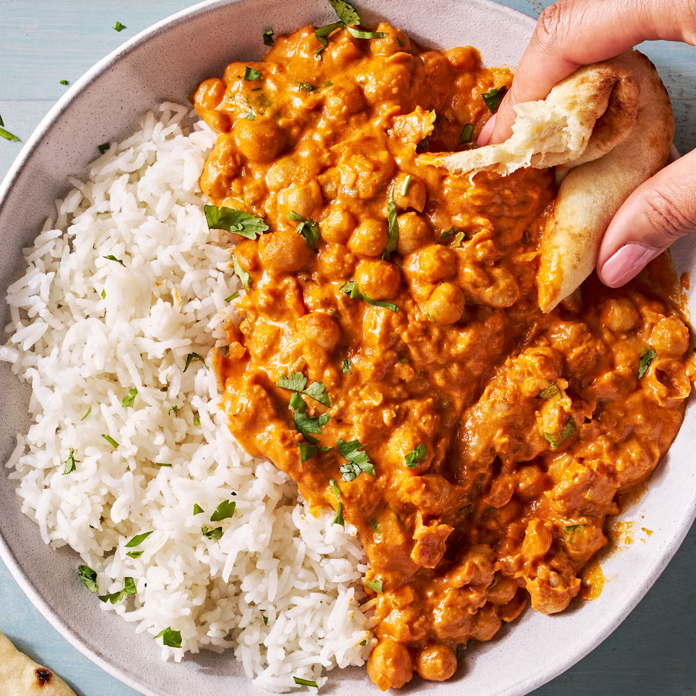

Home
Indian Butter Chickpeas

Searching for an exciting new way to prepare canned chickpeas? Look no further! This vegetarian take on butter chicken, featuring chickpeas simmered in a flavorful tomato gravy, will completely transform your perception of this pantry staple. Here are some pointers to help you perfect this recipe:
Ingredients
- 4 Tbsp. unsalted butter
- 1 yellow onion, finely chopped
- 1 tsp. (or more) kosher salt, divided
- 1/2 cup tomato paste
- 1/2 serrano chile, seeded, finely chopped
- 1 Tbsp. grated or finely chopped peeled ginger
- 2 (14.5-oz.) can chickpeas, drained, rinsed
- 1/8 tsp. baking soda
- 1 tsp. garam masala
- 1 tsp. ground cumin
- 1 tsp. Kashmiri chili powder (or 3/4 tsp. paprika plus 1/4 tsp. cayenne)
- 1 Tbsp. dried fenugreek leaves or kasoori methi (optional)
- 1/4 cup finely chopped fresh cilantro
- Cooked jasmine rice or naan, for serving
Steps
- Step 1: In a large, high-sided skillet over medium heat, melt butter. Add onion and 1/2 teaspoon salt and cook, stirring occasionally, until softened, about 7 minutes. Add tomato paste and cook, stirring constantly, until darkened, 4 to 5 minutes. Add chile and ginger and cook, stirring, until fragrant and tomato paste is starting to stick to pan, about 1 minute more.
- Step 2: Add chickpeas and baking soda and stir to combine, then add garam masala, cumin, and chili powder and cook, stirring frequently, until fragrant and incorporated, about 30 seconds.
- Step 3: Stir in cream, fenugreek (if using), 1/2 teaspoon salt, and 1 cup water. Bring to a simmer over medium-high heat, then reduce heat to low and continue to simmer, stirring occasionally, until sauce is reduced, 10 to 15 minutes.
- Step 4: Divide rice among bowls or plates. Season chickpeas with salt, if needed, then top with cilantro. Spoon chickpeas over rice.